SG Forester DIY Amber Auxiliary Light Kit Install Guide
Step-by-step instructions to help you install your new auxiliary lights.
Overview
Follow these step-by-step instructions to install the SMITHtRONiC SG Forester DIY Amber Auxiliary Light Kit. Ensure you have all the necessary parts and tools before starting.
Estimated Install Time: 2-3 hours
Skill Level: Moderate
Disclaimer: SMITHtRONiC is not liable for any damages to your vehicle, property, or person resulting from the installation or use of this product. Proceed at your own risk, and consult a professional installer if necessary.
What You'll Need

SMITHtRONiC SG Forester DIY Amber Auxiliary Light Kit
- 2 ASA-Printed Housings
- 2 ASA-Printed Retainers with Brass Heat Inserts
- 12x M3 Stainless Steel Button Head Bolts

Lights of Your Choice
Specification Requirements:
Refer to the diagram for the bracket dimensions. Use this to ensure your chosen lights can be mounted with a single through-bolt and that the bracket will fit within the vertical adjustment cutout.
The design allows for vertical articulation of the bracket. The maximum bracket dimensions that permit full rotation without the corners of the rectangle interfering with the cutout are as follows:
- Height: 64.5mm
- Width: 23mm
Note: If your bracket is narrower but at the maximum height, it may still interfere with the edge of the cutout due to the increased range of rotation.
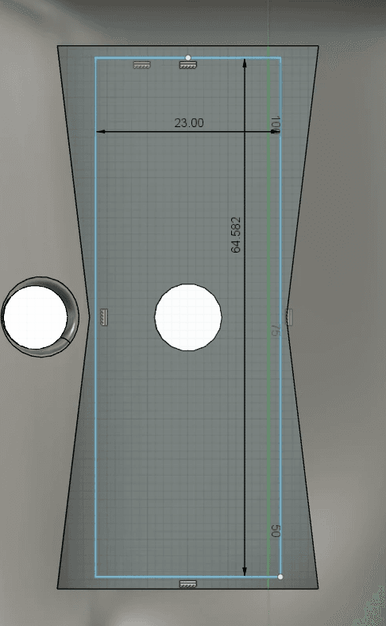
9005 Male End Connector
Depending on the light kit you choose, it may or may not come with the proper connector. You'll need to be sure that you have a 9005 male end connector with two wires coming out of it.
Also be sure you are comfortable cutting the wire on your lights and effectively soldering the connector on so that it may pass through the wire hole in the housing.
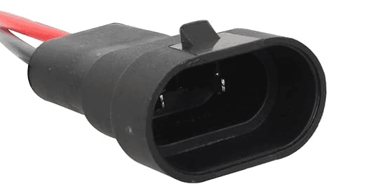
Tools
Reference the lights you purchased for information on tools needed to assemble the light to the bracket.
- Wire Cutters/Strippers
- Soldering Iron and Solder
- Heat Shrink or Electrical Tape
- 2.5mm Allen Key
- 4mm Drill Bit
- Handheld Drill
- Bumper Clip Removal Tool or Flathead Screwdriver
- Skinny Marking Tool (Pen or Scribe)
Step-by-Step Instructions
1. Safety First
- Ensure the car is off and parked on a level surface.
- Depending on your ride height, you may need to raise your vehicle to get underneath the front bumper.
- Please read the entire instruction guide before starting the installation process.
2. Prepare Your Kit
Attach the Light to the Bracket
- Follow the manufacturer's instructions to securely attach your light to its bracket.
- Ensure all components are tightened but still allow for articulation of the light.
Prepare the Wiring
Trim and Strip Wires:
- Cut the connector off your light.
- Strip back the shielding on both wires (positive and negative) to expose approximately 10mm of bare wire.
Mount the Bracket to the Housing
Attach Bracket:
- Slip the wire through the rear hole in the housing.
- Guide the bracket and its bolt through the center hole of the housing.
- Secure the bracket to the housing using the nut from your bracket kit and make sure the light is pointed the proper direction, towards the front with the large radius curve.
Tighten Securely:
- Tighten the assembly enough to hold the light securely but not so tight as to limit articulation or risk damaging the housing.
- Optional: Apply blue Loctite to the threads for additional security, but avoid getting Loctite on the housing or retainer as it will dissolve the plastic over time.
Prepare the Connector
Add Heat Shrink:
- Slide 1-2 larger heat shrink tubes over both wires leading to the light.
- Slide smaller heat shrink tubes over each individual wire (positive and negative).
Connect the Wires
Identify the proper orientation of the connector compared to the vehicle's receiving connector on the harness.
- White wire: Positive (+)
- Black wire: Ground (-)
Solder the Connections:
- Match the light's wires to the harness wires (positive to white, negative to black).
- Use solder to create a strong connection.
- Cover the solder joints with heat shrink for protection against the elements.

Test and Finalize
- Check all nuts and bolts to ensure the light and bracket are securely mounted but still allow for proper articulation.
- Once satisfied with the assembly, proceed to the next step of the installation.
3. Install the Relay
- Location: Inside the vehicle, locate the small door leading to the fuse panel. Yours may look different, remove that door.
- Relay Position: The slot for the relay is the third position from the bottom in the column of relays to the right of the fuse panel.
- Installation: Insert the relay until you hear a click. The tabs will only line up in one orientation.
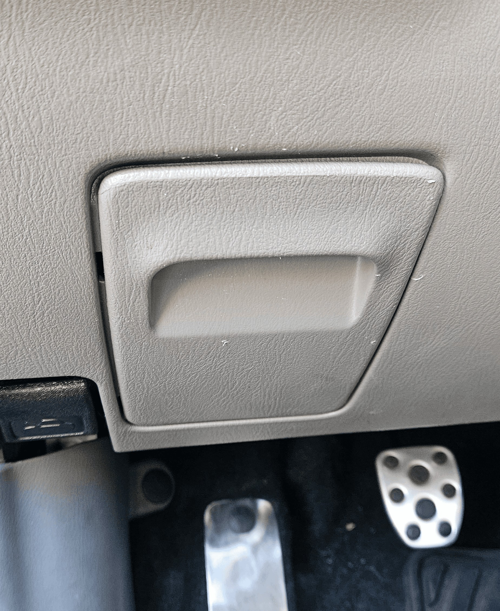


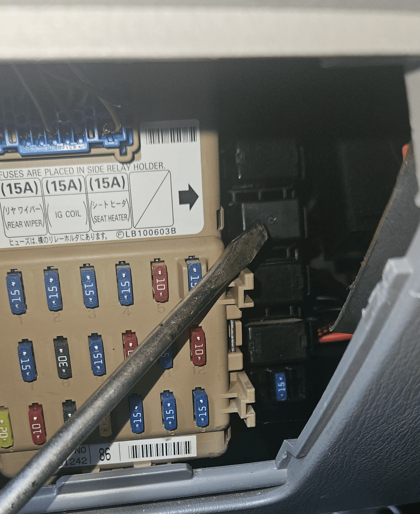
4. Install the Factory Fog Light Switch
- Location: Just above the fuse panel, locate the switch panel with blank covers.
Steps:
- Reach through the fuse panel hole to pop out the blank cover where you plan to install the switch. They are retained with clips on the top and bottom.
- Locate the fog light connector behind the panel (there are two connectors; the correct one fits the switch).
- Route the connector through the hole and plug it into the switch.
- Insert the switch into the panel (indicator light goes up).
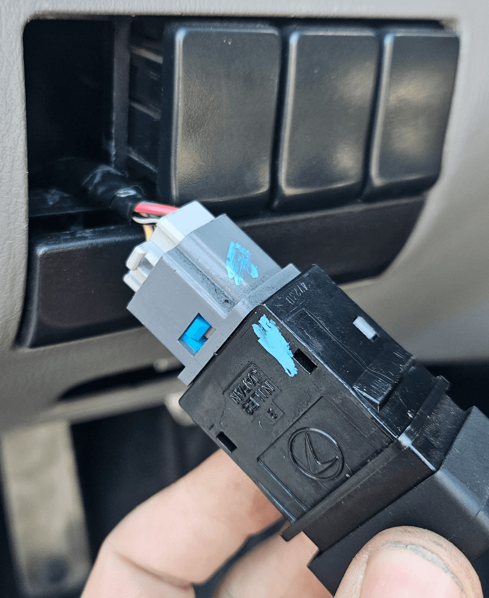

5. Prepare the Bumper
- Remove Clips: Remove the bumper clips underneath the front edge of the bumper and pry
the dust guard open to gain access.
- Do this carefully as bumper clips are easy to break.
- Remove Grill Covers: Press the clips on the factory fog light hole cover and remove it.


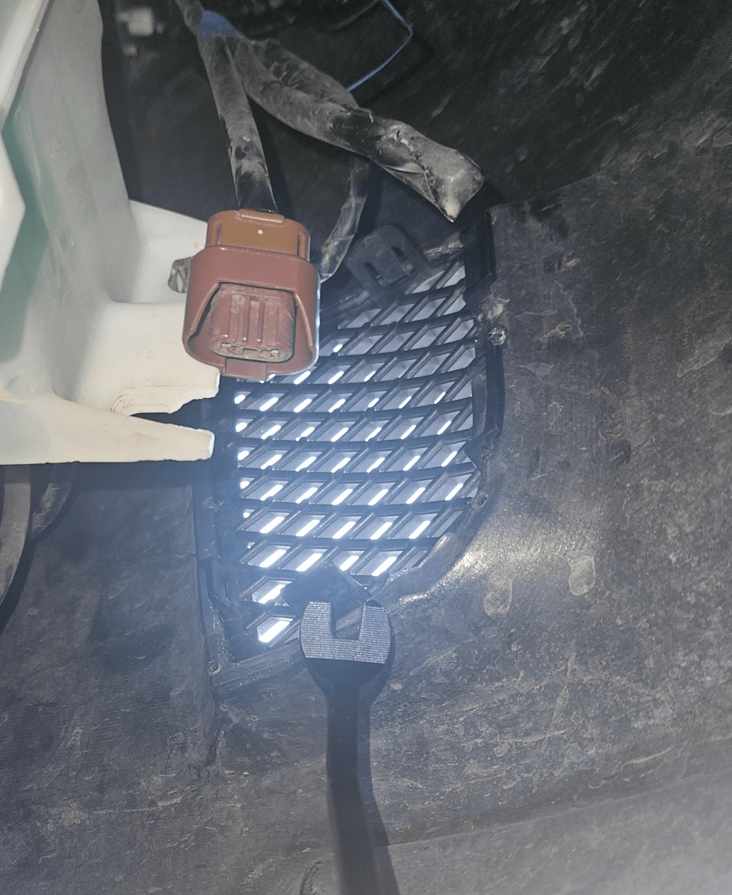
6. Test the Auxiliary Light
Plug In the Light
- Connect the auxiliary light to the factory fog light harness connector.
- There is only one correct orientation for the connector.

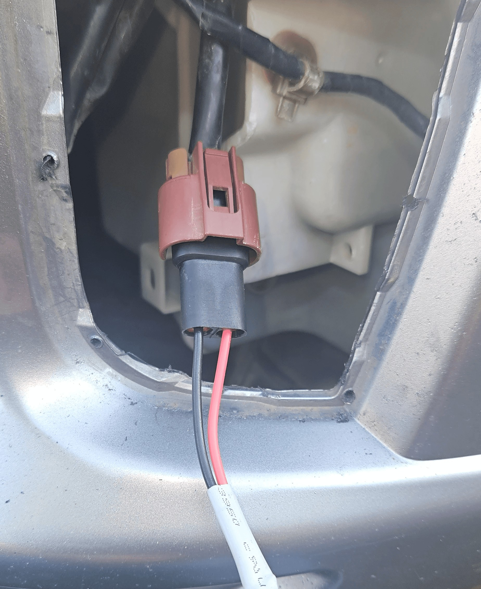
Test the System
- Carefully rest the auxiliary light on a stable surface to avoid damage.
- Turn on the ignition (headlights should be on) and press the fog light switch.
- Confirm that the auxiliary light turns on.
Troubleshooting
- If the light did not turn on, double-check the relay, switch installation, connector to the harness, and polarity of the wires from your light.
- If issues persist, contact me for assistance.
7. Mount the Housings
- Fit the Housing: Press the housing into the fog light hole, ensuring a snug fit.
Mark Drill Points
- Use the housing as a template to mark the locations for the 6 bolt holes on the bumper.
- Important: Once marked, remove the housing before drilling.


Disconnect the Electrical
- Unplug the auxiliary light connector from the factory harness.
- Set the housing assembly safely aside.

Drill Holes
- Drill 4mm holes at the marked points.
- Pay Attention to the Drill Angle:
- The drill should be parallel to the direction in which the housing mounts.
- The retainer does not compensate for the bumper's curve, so perpendicular holes may not align with the retainer holes.
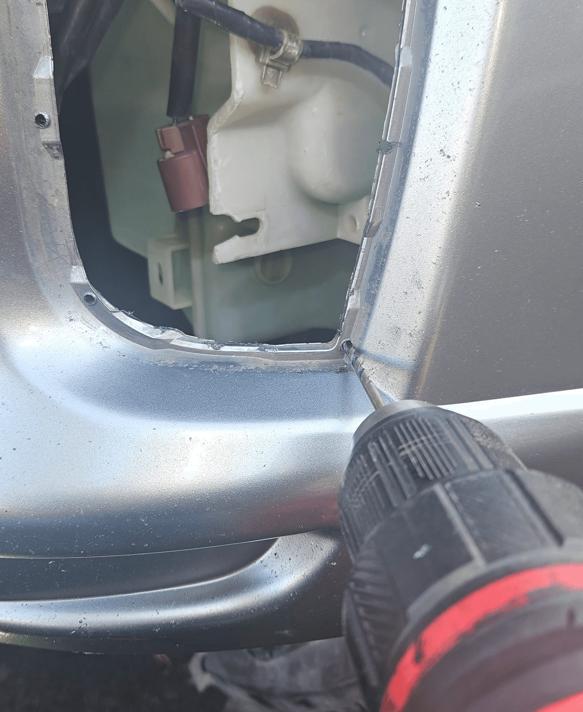
Hole Alignment Consideration
- Some holes will go through the bumper completely, while others may be offset over the edge.
- The design of the retainer is intended to secure the housing against the back of the bumper, not to rely on the bolt threads gripping the bumper itself.
8. Prepare the retainer
- Wire Placement: Slip the wire through the hole in the bumper.
- Retainer Placement: Before plugging in the connector, slip the wire through the matching side retainer with the heat-set inserts facing the engine.

9. Replace the Housing
- Press the housing back into the hole fully.
- Slip the retainer over the rear of the housing inside the bumper.
- Double-check your drilled holes for alignment.
- A flashlight behind the retainer hole can help this visual inspection.
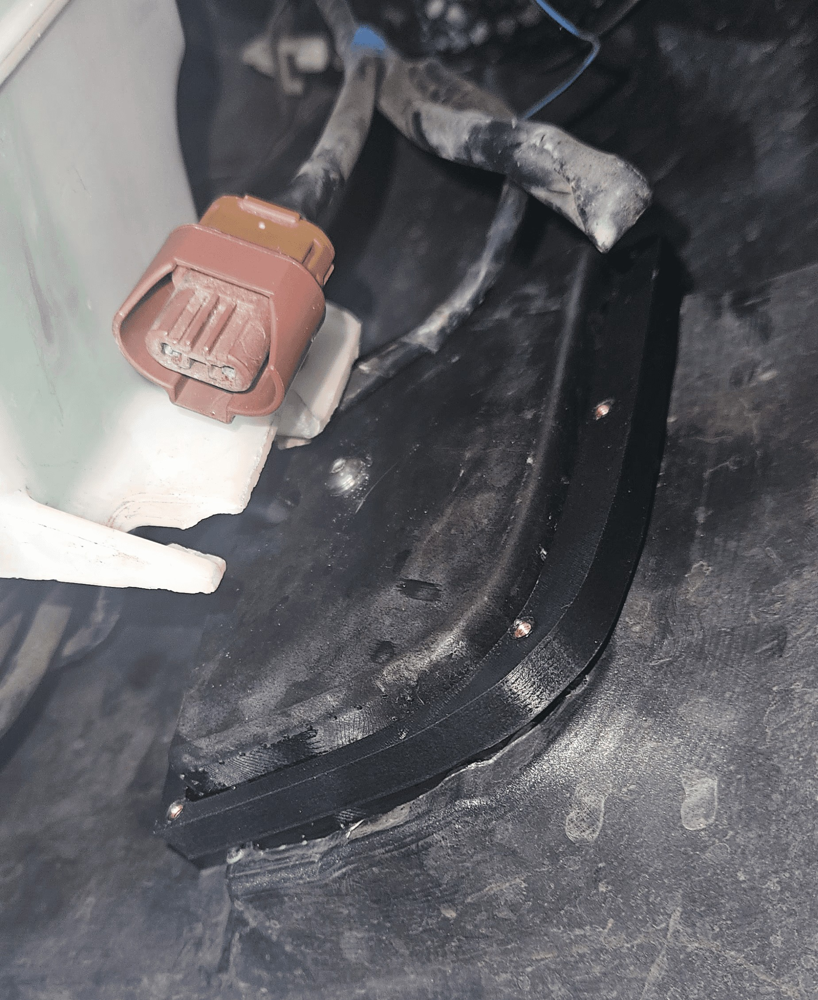

10. Secure the Housing
- Insert the Bolts: Insert the 6 stainless steel M3 bolts through the housing and into the retainer behind the bumper.
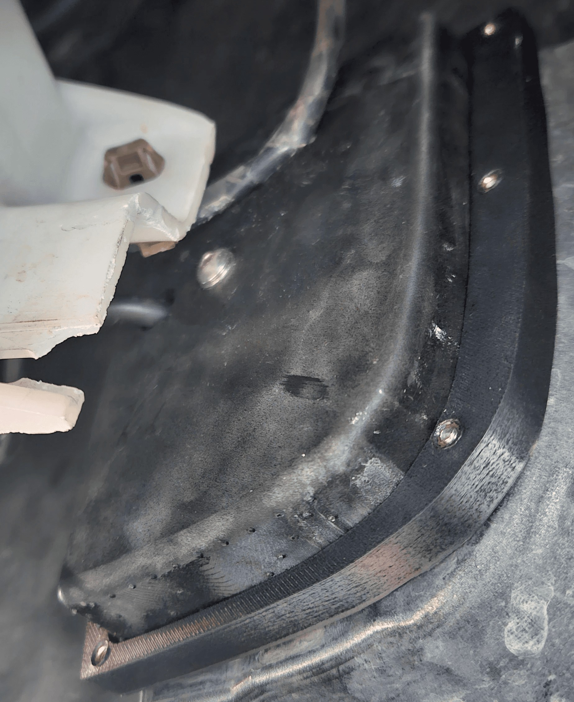
Assist the Bolts
- Use one hand inside the bumper to guide the bolts into the holes in the retainer while tightening them with the other hand from the outside.
- Ensure all bolts are threaded into the heat inserts before fully tightening.
- Use the 2.5mm Allen wrench.
Tighten in a Cross Pattern
- Tighten the bolts in a cross pattern to ensure even pressure and avoid misalignment, stripping the inserts, or damaging the housing.
- Do Not Overtighten: Tighten until snug to avoid damaging the housing or the stripping out inserts from the plastic retainer.
11. Reconnect Electrical Components & Secure Bumper Panels
- Connect the Lights: Plug the light connector back into the factory harness.
- Close up the bumper: Reattach your splash panel using the bumper clips.

12. Repeat for the Other Side
Go back to step 5. Prepare the Bumper and repeat the process for the other side.
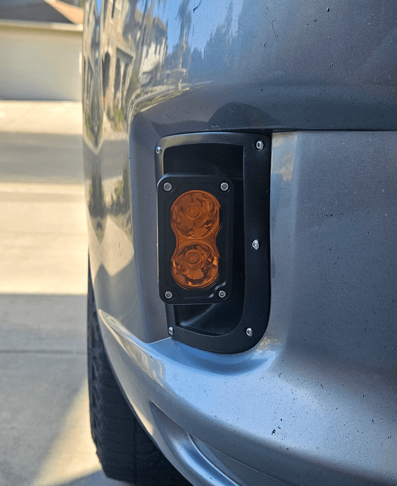
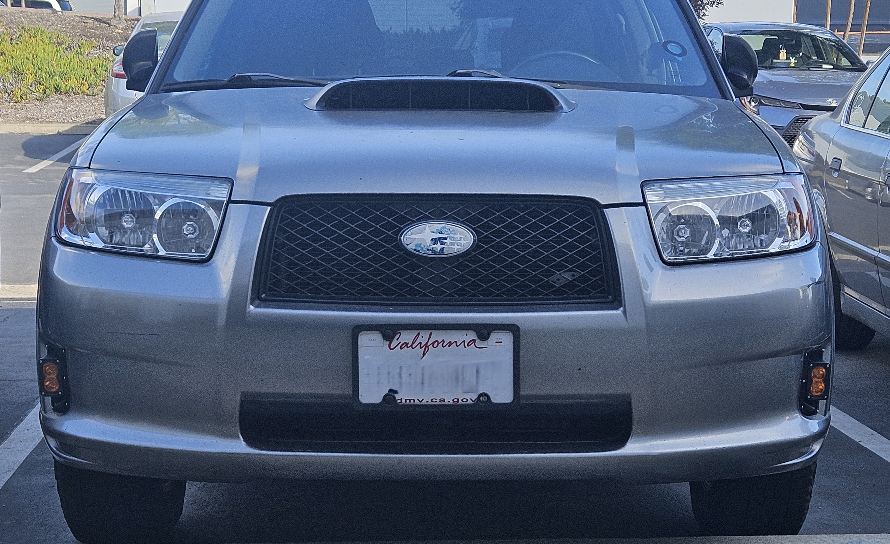

13. Adjust the Light Beam
- Position Your Vehicle: Park on a flat surface about 25 feet from a wall or garage door.
- Turn on the Auxiliary Lights: Press the fog light switch and inspect the beam pattern.
Beam Alignment
- Vertical Alignment: The top edge of the amber light beam should align with the bottom edge of your headlights.
- Horizontal Alignment: Adjust slightly toward the center for optimal road visibility or to your preference.
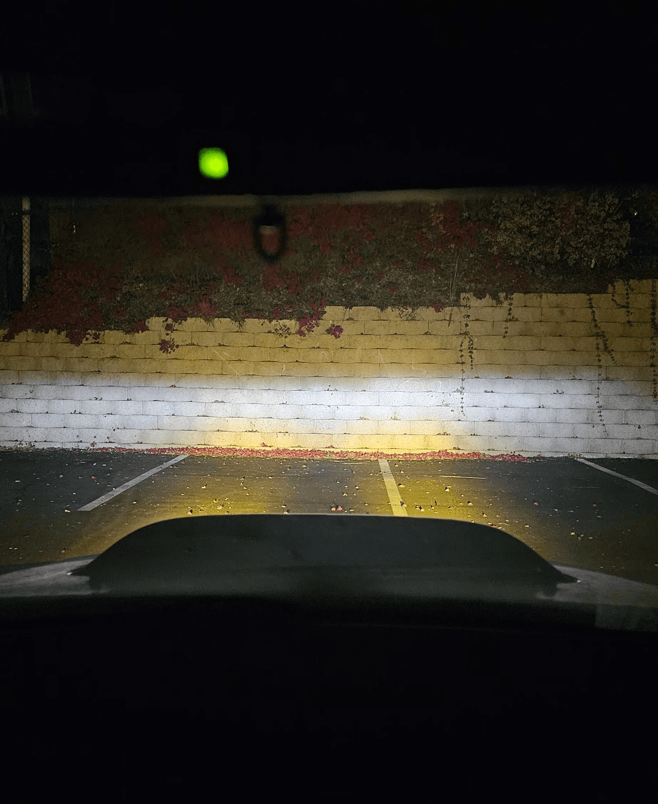
Final Notes
Need Help or Replacement Parts?: Contact me at ron@smithtronic.com.
Adjusting for Loose Vertical Alignment
If vertical adjustment is too loose, follow these steps:
- Depending on your kit, locate the nut on the back side of the housing where the bracket attaches.
- Tighten the nut to increase resistance.
- Ensure the light is held firmly in position while still allowing for smooth adjustment.
- Do not over tighten the nut and crack the housing.
Adjusting for Loose Horizontal Alignment
If horizontal adjustment is too loose, follow these steps:
- Loosen the nut on the back side of the housing to remove the bracket.
- Depending on your kit, tighten the bolts securing the light to the bracket.
- Ensure enough resistance to hold the light firmly while still allowing for adjustment.
Reattaching the Bracket to the Housing
- Ensure the bolt is seated properly in the retaining grooves of the bracket.
- Guide the bolt and light assembly through the hole in the housing.
- Place the lock washer onto the bolt, followed by the nut.
- Thread the nut by hand to avoid cross-threading.
- Tighten the nut securely.
- Do not over tighten the nut and crack the housing.
- This process ensures a secure fit and proper functionality.
Cheers!
I hope you enjoy your new auxiliary lights for the sports bumper and thank you for supporting this project!